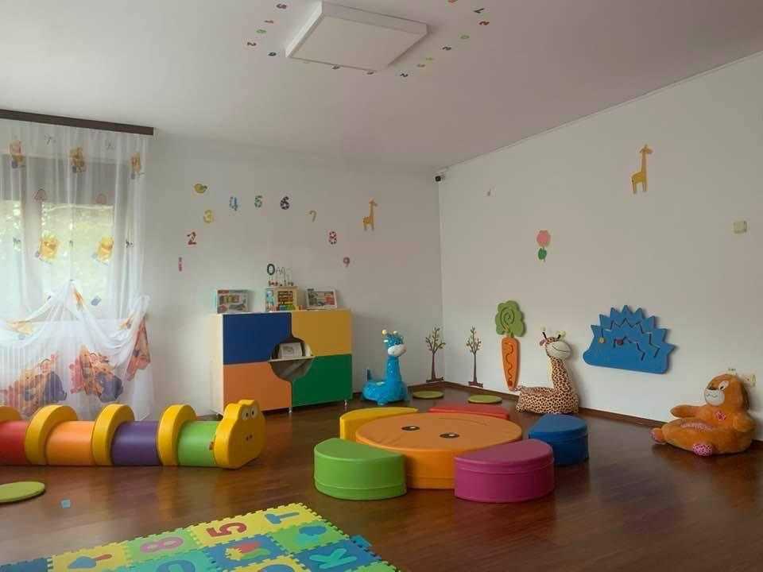
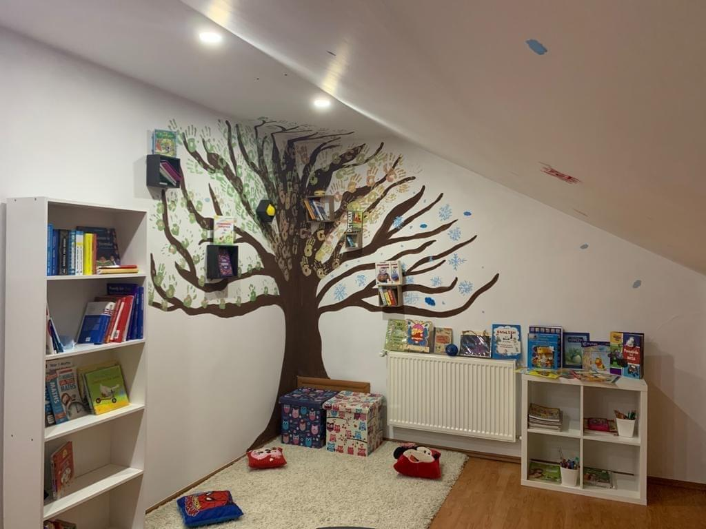
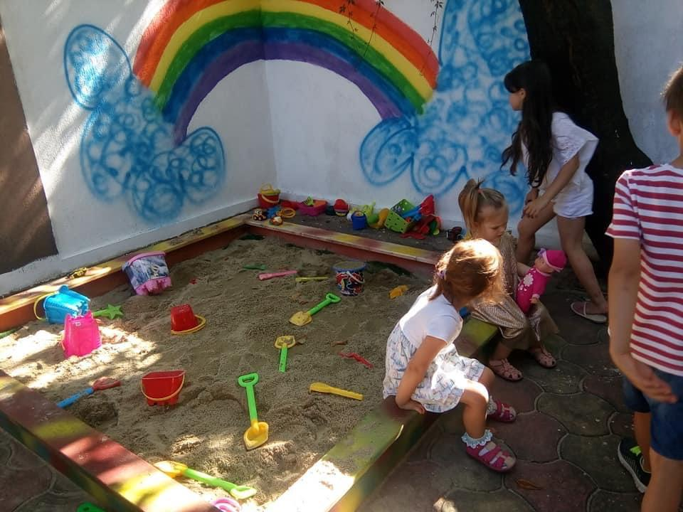
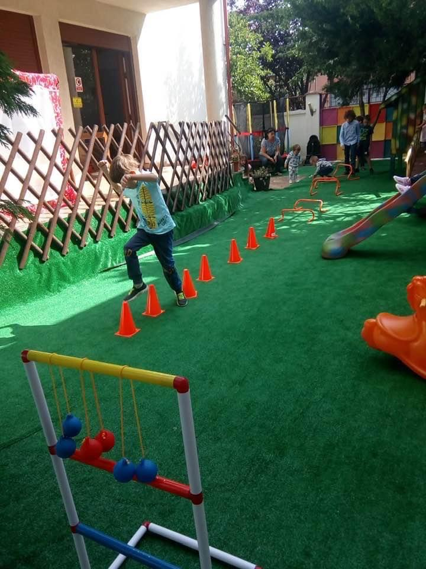
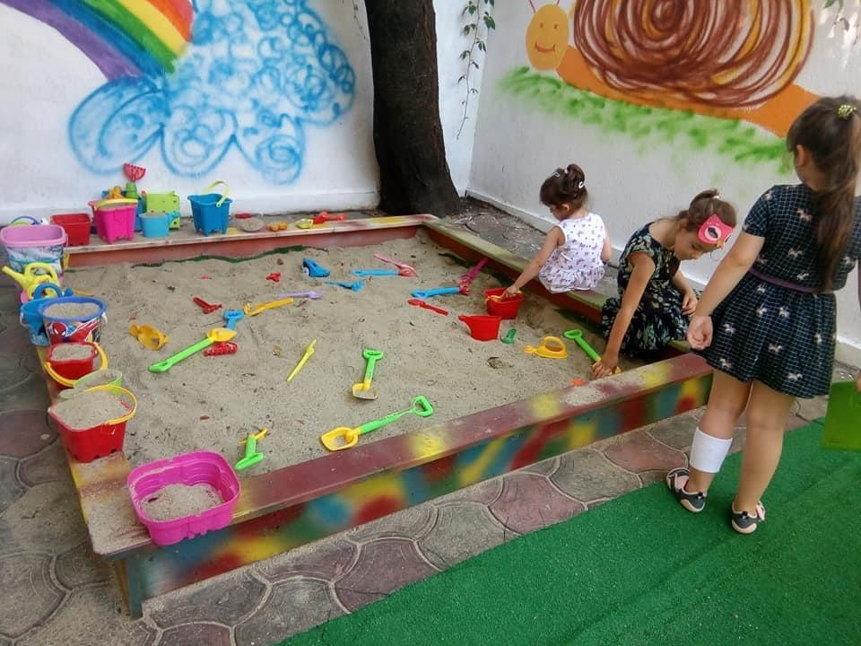
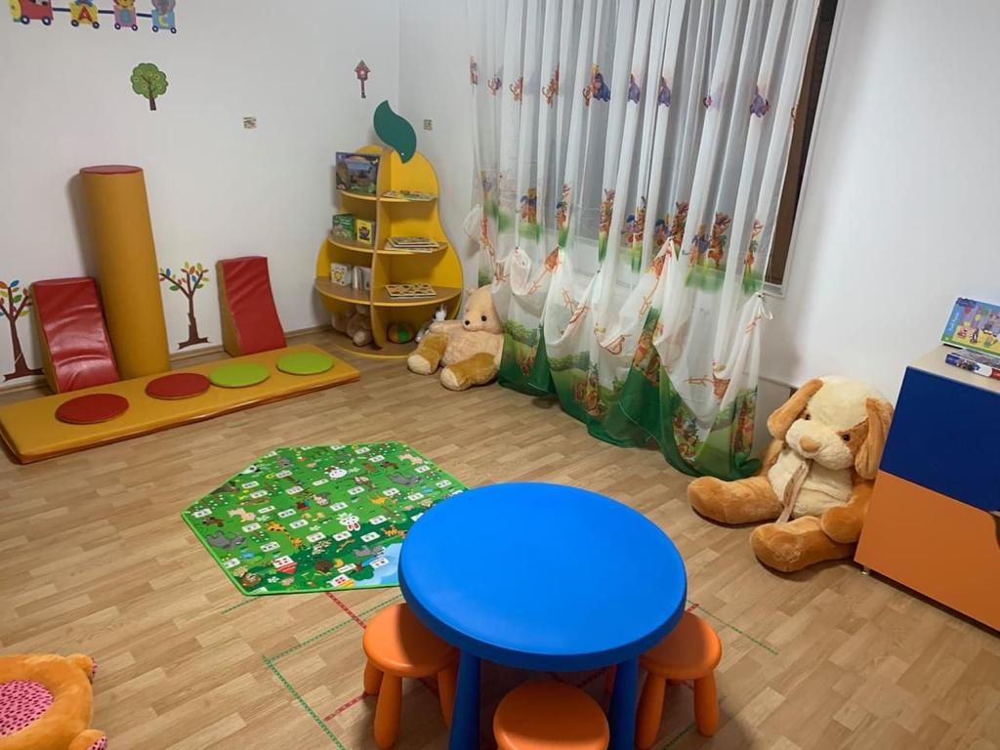
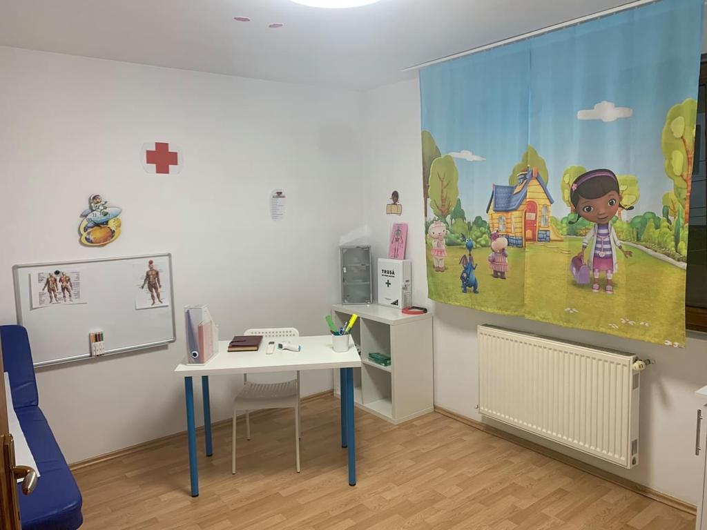

Localizare
Grădinița cu program normal și prelungit “Ruffy Strumfi” este situată în municipiul Bucuresti, pe strada Pieței nr. 5A, în vecinatatea școlii Școala Gimnazială 179 a teatrului Masca și a Gradinitei nr 44.Spațiul școlar este situat în vecinatatea parcului public, Parcul Bazilescu.
Grădinița cu program normal și prelungit “Ruffy Strumfi” beneficiază de un interior care se întinde pe o suprafață de 320 mp și o suprafață exterioară de 400mp.
Construcţia deserveşte numai unității, care dispune de 3 săli de clasă, având spaţii pentru activităţi educative, de odihnă şi de acces separat la grupurile sanitare.
Toate sălile de clasă sunt mobilate la standard modern, bine proiectat.
Sălile de grupă sunt ingenios decorate, benefice pentru realizarea unui învăţământ optim.
Atât spațiile administrative cât și spațiile auxiliare sunt corespunzătoare tipului specific de activitate desfășurată de instituție și dotate modern.
Dotarea permite desfășurarea în condiții optime a activității unității școlare.
